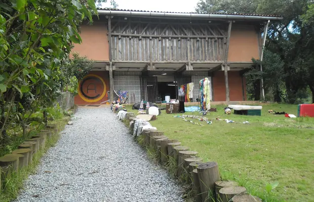
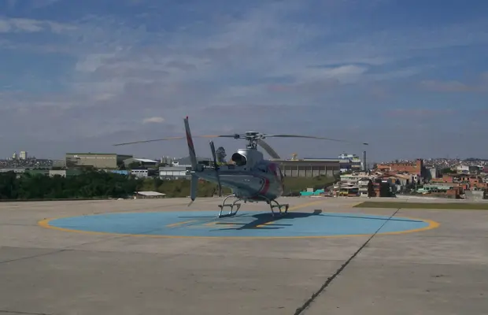
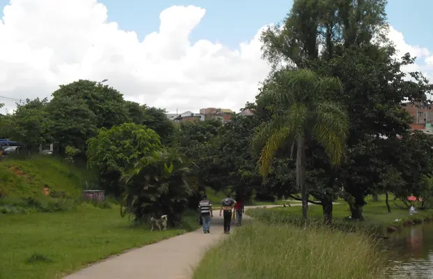

A história de Carapicuíba remonta a uma antiga aldeia de índios, tendo vivido momentos importantes dentro da história do Estado de São Paulo. Carapicuíba foi uma das doze aldeias fundadas pelo Pe. José de Anchieta (por volta de 1580), para preservar a educação e a moralização dos silvícolas. Praticamente, pouco se desenvolveu até a chegada dos trilhos da velha estrada de ferro Sorocabana.
Em 1928, Carapicuíba já era distrito policial. Na década de 30, os pioneiros já acreditavam no povoado que nascia, porque a região possuía clima excelente e terras ótimas para a cultura de batatinhas, cereais, legumes e hortaliças, onde se cultivavam também o castanheiro europeu e amoreira. Existem várias versões sobre o significado da palavra Carapicuíba: pau podre, aquele que se reúne em poços, cascudo, escamose, etc., mas segundo informou o professor Carlos Drumond, chefe do Departamento de Lingüística e Línguas Orientais, a palavra vem de cara + iba, ou seja: cará ou acará: peixe; picú ou pucú: comprido; iba: ruim, que não serve para ser comido. Assim, Carapicuíba é o nome do peixe: 'cará comprido' que não pode servir para ser comido, por ser venenoso como o baiacu.
Distrito criado com a denominação de Carapicuíba, pela Lei Estadual n.º 233, de 24-12- 1948, subordinado ao município de Barueri. Em divisão territorial datada de 1-VII-1950, o distrito de Carapicuíba figura no município de Barueri. Assim permanecendo em divisão territorial datada de I-VII-1960. Elevado à categoria de município com a denominação de Carapicuíba, pela Lei Estadual n.º 8.092, de 28-02-1964, desmembrado do município de Barueri. Sede no antigo distrito de Carapicuíba. Constituído do distrito sede. Instalado em 26-03-1965.
Fonte: https://cidades.ibge.gov.br/brasil/sp/carapicuiba/historico
Carapicuíba possui diversos pontos turísticos, locais de visitação turística com relevância cultural e/ou natural, com a possibilidade de contemplação, lugares incríveis para você visitar é o que não falta! Para te ajudar separamos 3 que você precisa conhecer.
A Oca foi criada para ser um local de formação de cidadãos conscientes incentivando principalmente as crianças e jovens a participarem de um ambiente cultural e educativo. Sendo uma organização não governamental, seu propósito é incluir os cidadãos dentro de um contexto cultural, envolvendo as mais variadas expressões artísticas. Com um enorme espaço sua estrutura oferece para os alunos oficinas de aprendizados, como Teatro, Artes Plásticas Danças, Música, Brincadeiras, Contos de Histórias e outros. Muito bonito e interessante, o Centro Cultural foi construído em alvenaria, com plataformas e escadarias de madeira.
A oca como é um ambiente rústico todo decorado com pinturas, cortinas coloridas, artesanatos, quadros e uma enorme variedades de objetos culturais. O espaço tem a sua disposição um amplo salão utilizado para ensaios e apresentações. A Oca fica dentro do Conjunto Histórico da Aldeia de Carapicuíba.
Em um dos meus passeios por São Paulo, tive a oportunidade de conhecer um lugar que é um ponto importante quando se trata de tráfego aéreo mais movimentado do país e de helicóptero. Conheci uma das bases mais movimentadas de pouso e decolagem de helicópteros de São Paulo e grande São Paulo, como também a oficina de manutenção dessas máquinas incríveis. Lá além de helicópteros particulares, vimos também helicópteros de empresas como Globo, Rede Record e muitos modelos diferentes, alguns abertos, outros embalados em capas protetoras e foi possível também entrar em alguns e apreciar o interior deles. São muito bem estofados e com extremo conforto, tudo muito chique.
Pude presenciar também uma decolagem e um pouso na manhã da minha visita. Existem áreas restritas pintadas no chão indicando até onde poderíamos andar justamente para não atrapalhar alguma manobra. A parte aberta fora dos barracões onde os helicópteros ficam guardados é numa parte mais alta do bairro onde estávamos onde logo mais adiante a vegetação assume ladeira abaixo num lugar bem alto. O lugar é uma sede para quem precisa guardar suas aeronaves e um lugar para encontro de quem curte helicópteros. É uma espécie de clube com todo requinte e luxo. Vale a visita!
Com capacidade para 80.000 pessoas, esse imenso parque que fica na zona sul da cidade de Carapicuíba, é o principal local de diversão e recreação da população. O espaço conta com uma pista de bicicross, playground, praça de eventos e pistas para caminhadas,que passam dentro de bosques ao redor de um lindo lago. Foram instalados no parque mesas,bancos, churrasqueiras em lugares agradáveis, para acomodar da melhor maneira os visitantes.Todos os dias são montadas barracas de lanches, frutas,caldo de cana e variedades de alimentos. O espaço é aberto para o comércio de vendedores ambulantes,e para os artesãos da região expor seus trabalhos. O Parque Ecológico fica ao lado da Aldeia de Carapicuíba.
Fonte: https://www.minube.com.br/o-que-ver/brasil/carapicuiba
Natural de Carapicuíba, Marcos Neves, 41 anos, é graduado em administração de empresas pela FMU. Seu pai, Luiz Carlos Alves Neves, foi prefeito de Carapicuíba de 1983 a 1988 e deputado estadual de 1991 a 1995. Em outubro de 2000, com apenas 25 anos, foi eleito vereador com 1.179 votos, sendo o mais votado de seu partido à época. Já no ano seguinte, foi eleito Presidente da Câmara Oeste (Associação dos Vereadores da Região Oeste), entidade composta por sete municípios: Osasco, Carapicuíba, Barueri, Jandira, Itapevi, Santana de Parnaíba e Pirapora do Bom Jesus. Reeleito vereador em 2004, com 4.605 votos, foi novamente o mais votado do partido e o segundo mais votado na cidade. Naquele mandato foi presidente da Comissão de Justiça, Redação e da Comissão Parlamentar.
Um grande movimento popular lançou Marcos Neves candidato a prefeito em 2008, obtendo expressivos 57.854 votos, ficando como 2º colocado. Candidato a uma vaga de deputado estadual em 2010 foi eleito, obtendo 54.459 votos. Em 2012, foi candidato a prefeito de Carapicuíba e alcançou o segundo lugar com 58.440 votos. Na Assembleia Legislativa é membro da Comissão de Transportes e Comunicações e da Comissão de Infraestrutura. Além disso, foi o criador e coordenador da Frente Parlamentar “Basta de Apagão”.
Em 2014, Marcos Neves reelegeu-se deputado estadual com 105.849 votos pelo Partido Verde (PV), o que corresponde a praticamente o dobro da votação de 2010. A votação expressiva nas urnas é resultado do trabalho do primeiro mandato do deputado estadual, que conquistou muitos benefícios para a população do Estado. De março de 2015 a março de 2016, o deputado Marcos Neves foi líder da bancada do Partido Verde (PV) na Assembleia Legislativa do Estado de São Paulo.

Fonte: https://cidades.ibge.gov.br/brasil/sp/carapicuiba/panorama